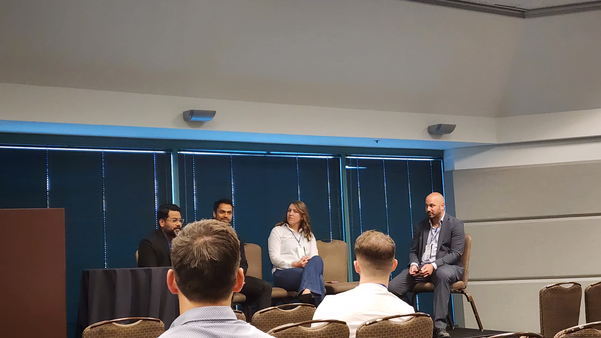
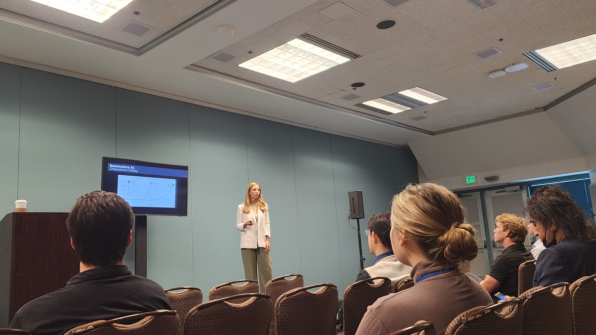
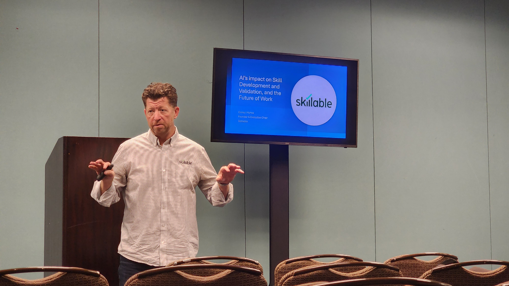

1. PANEL SESSION: The Future of Tech Startups: Trends and Predictions
여기서는 유명 대기업 테크기업부터 스타트업까지 모두 모여서 이야기를 진행했다.
주제가 주제다보니까 당연하게도 AI와 연관되어 질문이 많이 나왔는데, 내용은 대략적으로 이렇게 있었다.
- AI가 발전하는 과정에서, 우리는 앞으로 정확한 솔루션/철저한 보안 관련 쪽으로 신경을 많이 써야한다.
- 데이터의 퀄리티가 올라가고 있기 때문에 갈수록 비싸질 것이다. 모델도 그 비싼 데이터로 운영되기 때문이다.
- Intrastructure적으로는 챌린지가 될 것이다. 여기도 결국 돈이 연관되어 있기 때문이다.
- AI라고 무턱대고 도전하는건 지양한다. 예전에 암호화폐 유행했었을 때도 다들 그쪽으로 뛰어들었는데, 결과가 많이 좋지 않았다. 어느 정도 잘 알아보고 하는게 좋을 것 같다.
- Founder라면 무조건 공부가 필요하다. 이것저것 잡다하게 최대한 공부해야한다. 그리고 솔루션이 scalable한지, 싼지 알아봐야 한다.
2. Unraveling Tomorrow: Mapping the Next 20 Years of Technological Evolution
이 세션에서는 IoT, Bio, Eco, VR/AR 등 다양한 필드에서의 변화 및 전망을 발표했다.
여기서도 결국 하는 얘기는 같았는데, 데이터가 점점 쌓일수록 퀄리티가 올라가며, 가격이 비싸질 것이라는 얘기였다.
여기서는 세션 제목에 Technological이 붙어서 그런지 개발자만 참여하는 기적(?)이 일어나서 기술적으로 깊게 토론하는 시간을 가질 수 있었다.
- IoT쪽도 지금 AI를 도입하는 중이다. 근데 여기도 Cloud 환경을 이용하는 경우가 많기 때문에 Infrastructure쪽으로 일단 cost조절을 최우선으로 두고 개발하고 있다.
- Cloud는 AWS가 가장 편한데 비싸다. 차라리 GCP를 사용하는게 더 낫다. AWS보다는 접근성이 좀 떨어지는데 가격면에서는 좋다.
- 근데 IaC가 나오면서 AWs, GCP, Azure도 사용하기 편해졌다. Terraform을 사용하면 이 모든 것들을 관리할 수 있다. 아직 이걸 다루는 사람이 부족한 편인 것 같더라.
- Terraform 자체를 사용하는 것은 좋은 아이디어인데, 그게 오픈소스다보니까 불안정한면이 있긴 하다. 그런데 AI기반 산업발전속도가 빠르다보니 오픈소스가 안정화되기 전에 치고 올라가버리니 사용이 애매하다. -> 그건 어쩔 수 없는 것 같다. 그저 우리가 최대한 기여하는 수밖에 없다. 원래 여기 업계는 빨리 변하지 않느냐
3. How AI is transforming skill development and validation of the future of work
이 세션은 재밌게 봤는데, 발표자분이 NLP에 10년 넘게 종사하신 분이었기 때문이다.
자신이 개발한 기술을 예시로 NLP가 어떻게 발전했는지 얘기했는데, 내가 NLP 프로젝트를 하면서 놓쳤던 부분에 대해 자연스럽게 짚어주시는걸 보고 신기하다는 느낌을 받았다.
참고로 이분이 강조하신 것도 다른 세션과 거의 동일했다.
- 앞으로는 인공지능 퀄리티가 더 좋아질 것이다. 즉 서비스 제공 질이 더 좋아질 것이다.
- 즉 우리는 이거를 어떻게 “활용”하는지에 관건이 달렸다.
- 개발자 입장에서도 어떻게 퀄리티 높은 모델을 제공할건지 고민해야 할 필요성이 있다.
일단 좋은 모델을 만들기 위해서는 좋은 데이터가 필요하며, 이 과정에서 데이터 전처리의 중요성이 더 커지고 있다. - 투자자도 공부를 해야한다. AI/개발에 대해 전혀 모르는 상태에서 투자할 것이 아니라, 데이터의 퀄리티가 어떤지를 파악하는 눈을 길러야 한다. 많은 기업들에서 쓰레기 데이터로 학습을 시켜 돈을 낭비하는 경우가 많은데, 이를 알아봐야 한다.
- GPT기술이 많이 발전했기 때문에 이 모델들에게 물어보면 어느 정도 사전 지식을 얻을 수 있을 것이다.
- (정리) 앞으로 인공지능 산업은 모델이 아닌 “퀄리티”로 승패를 나눌 것이다. 이 과정에서 데이터 전처리/자동화의 중요성은 더 커질 것이다.
2일차 후기
이날따라 AI에 대한 깊은 토론이 진행됐던 것 같다. 공식 석상에서 기술적인 얘기는 안했다만, 다들 한결같이 “데이터 전처리”, “자동화”에 강조를 두는 것을 보면 앞으로의 AI개발에 이를 눈여겨봐야 할 것 같다는 생각이 들었다.
이 날도 1일차와 동일하게 세션이 끝나고 개발자들끼리 모여서 대화의 장을 펼쳤다.
영어로 대화했기 때문에 정신집중 하느라 너무 피곤했는데, 다들 그거 감안하고 나한테 말을 걸어주더라ㅋㅋㅋㅠㅠㅠ 참 따뜻한 사람들이다 ㅎㅎㅎ대화 내용을 요약하면 아래와 같다.
- 이 날은 데이터에 대해서 심도 있게 대화를 나눴는데, 사람 사는게 다 거기서 거기인지 생각이 동일한 곳이 많았다.
대표적으로 데이터 정제에 관해서였는데, 데이터 정제가 까다롭다보니 기술+시간 비용이 크게 드는 편이라고 한다.
그런데 비전공자들(특히 비전공자 CEO같은 사람들)이 이것조차 모르는 상태에서 투자를 계속하다보니 전체 투자금의 30% 이상을 엉뚱한 곳에 돈을 사용하면서 최적의 결과물을 요구한다며 한숨을 쉬더라. - 어쨌든간에 오픈소스 면에서는 데이터 정제 쪽으로 코드가 있으면 여러모로 SW산업에 긍정적인 영향을 미칠 것 같다는 얘기가 나왔다.
- 그 외로는 서로 회사에 관한 얘기와 앞으로의 핫이슈 프레임워크/라이브러리에 대한 토론을 나눴다. 내가 모르는 오픈소스들을 많이 접할 수 있어서 한층 더 똑똑해진 기분이 들었다.
- 이 날은 데이터에 대해서 심도 있게 대화를 나눴는데, 사람 사는게 다 거기서 거기인지 생각이 동일한 곳이 많았다.
평일에 열리다보니 다들 회사 <-> 컨퍼런스를 오가느라 행사가 생각보다 시끌벅쩍하지는 않았다. 다만 시간대마다 다양한 사람들을 만날 수 있어서 재밌었던 것 같다. (체감상으로는 한 1000명 정도 온듯..?)
다음에 기회가 된다면 또 가서 사람들이랑 대화를 나눠보고 싶은 생각이 들었다 😁
![[오픈소스] 2024년 6월 오픈소스 소식지 (2)](../../../../../../coverImages/github.png)
![[컨퍼런스] Tech Summit Silicon Valley 2024 후기 - 1일차](../../../../../../coverImages/24techsummit.png)